netcore-sci
.NET core sci
- Build
- Examples
- Tests
- Quickstart
- Basic concepts
- Unit tests
- How this project was built
- Documentation (github pages)
- IOT
Build
mkdir ~/opensource
git clone https://github.com/devel0/netcore-sci.git
dotnet build
Examples
0001
create a dxf
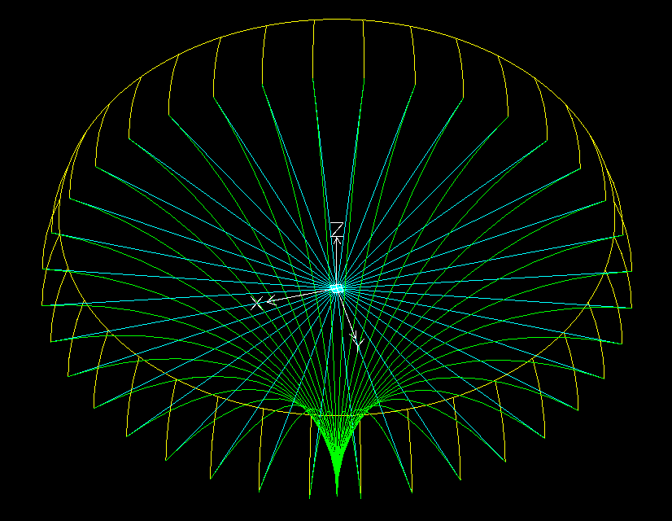0002
detect polygons ( line, arcs ) intersection loops
yellow ∩ green
0003
detect polygons ( line, arcs ) intersection loops when edges overlaps
yellow ∩ green
Tests
👉 unit tests still a good place to find some example about library usage.
LoopTest_0014
yellow - green
LoopTest_0021
- yellow ∩ green dxf
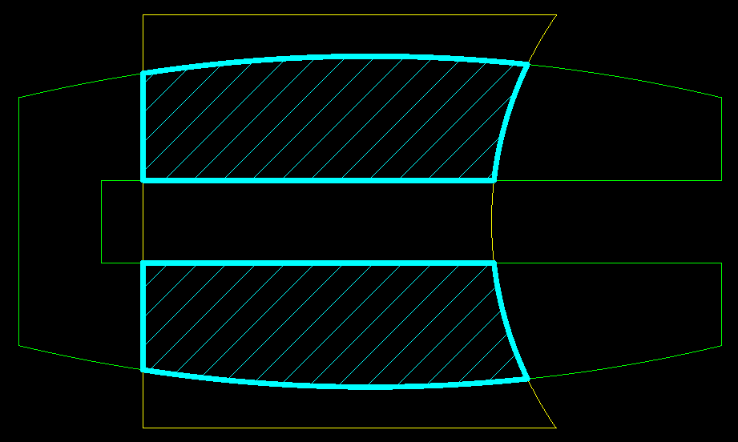 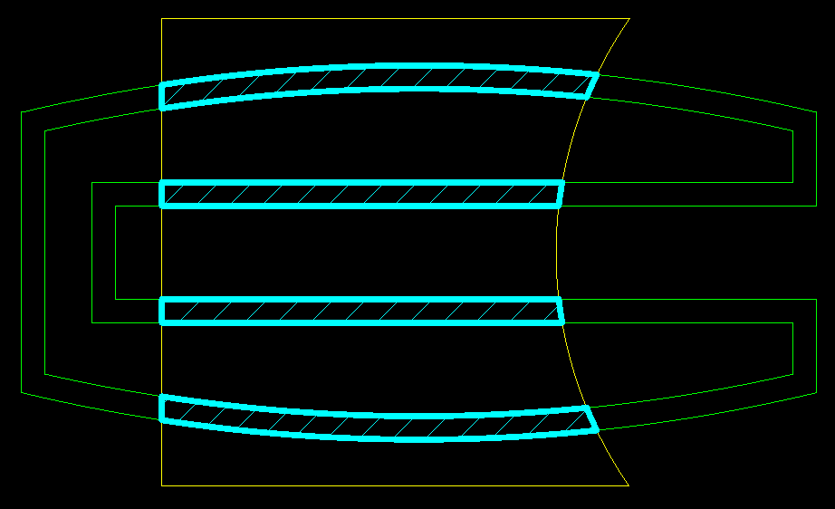 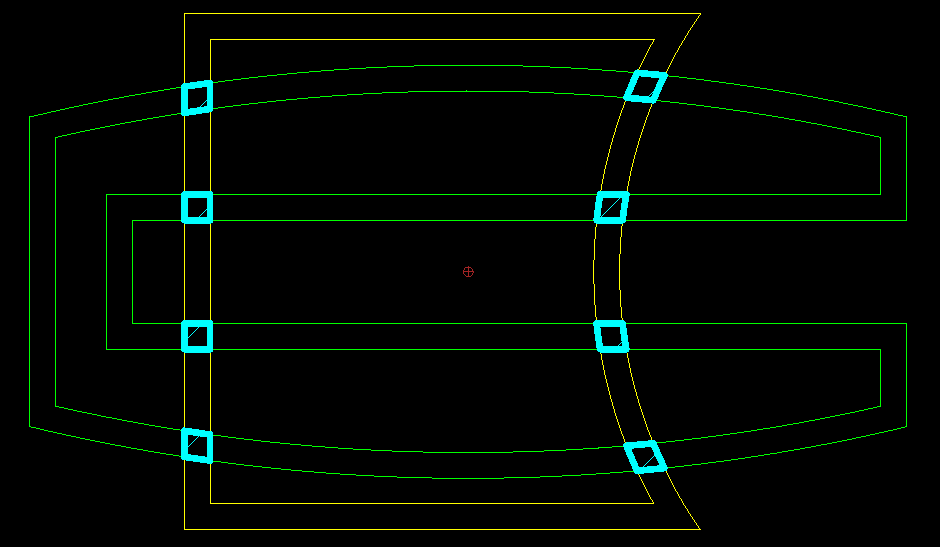
- yellow - green dxf
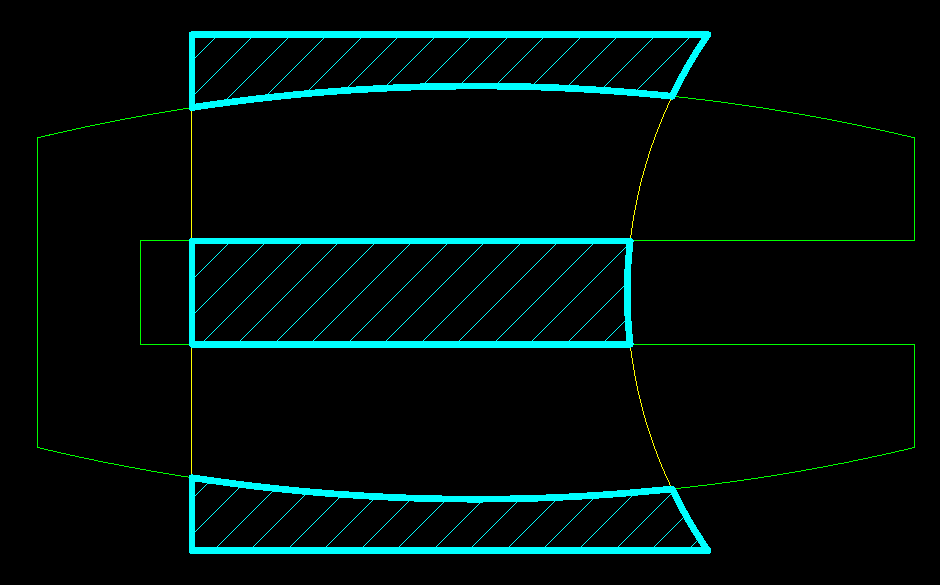 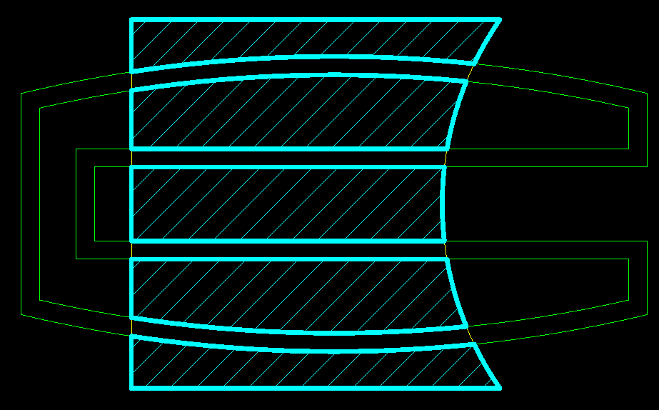 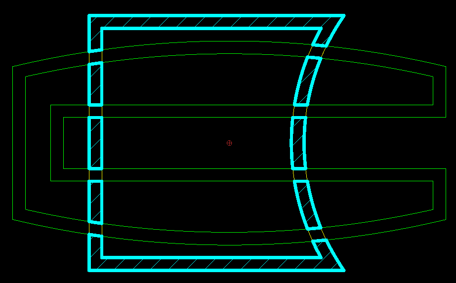
- green - yellow dxf
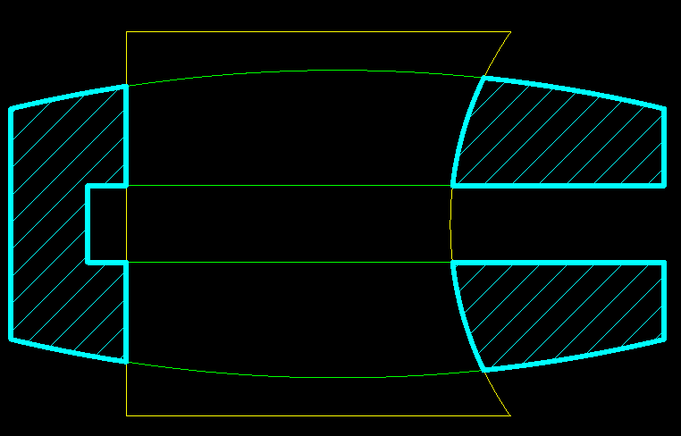 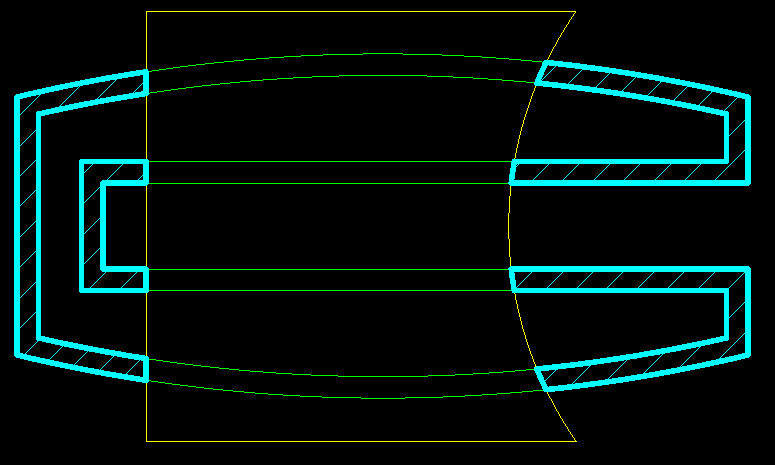 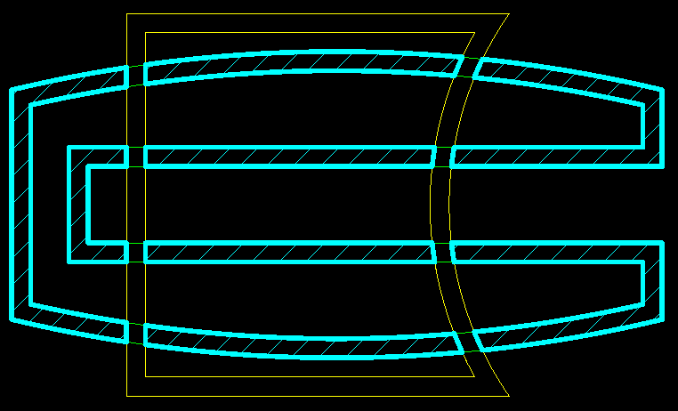
- yellow ∪ green dxf
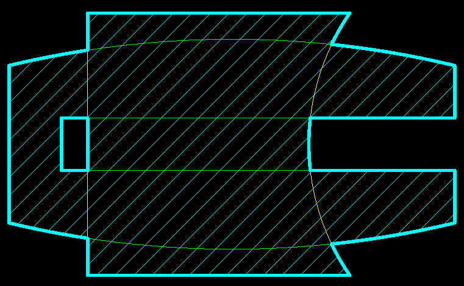 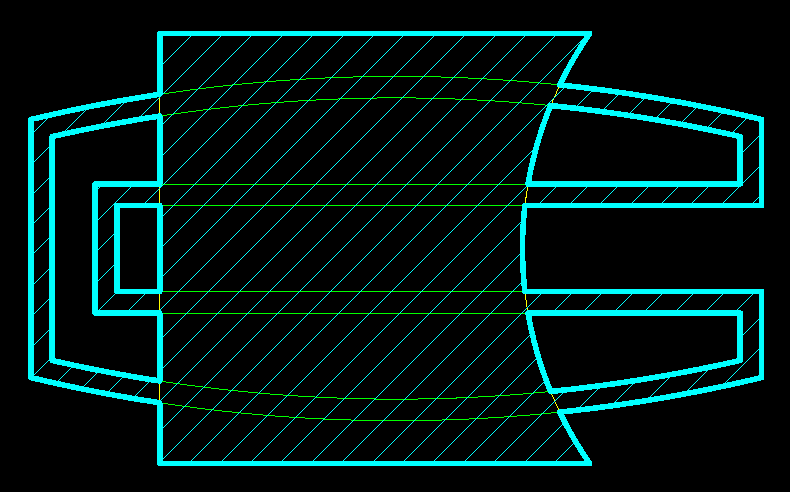 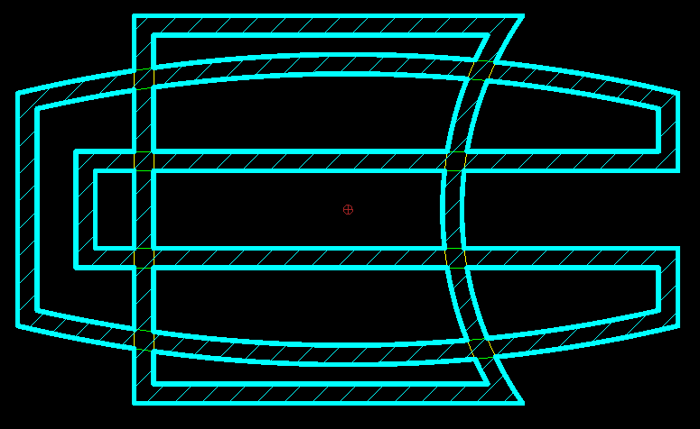
PolygonTest_0007
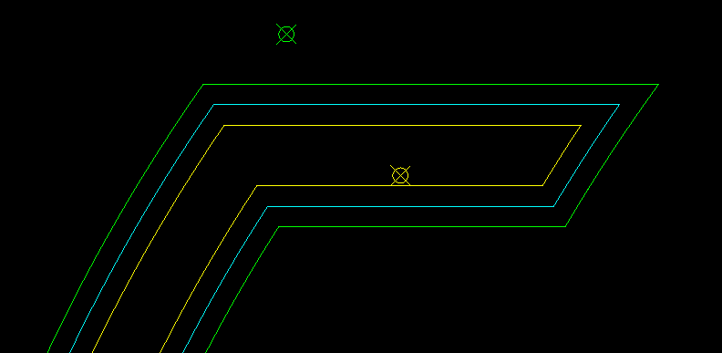
offsets the existing polyline ( cyan ) by specified amount using a reference point to disambiguate the offset side ( yellow, green ).
Quickstart
global usings:
global using SearchAThing.Ext;
global using static SearchAThing.Ext.Toolkit;
global using SearchAThing.Sci;
global using static SearchAThing.Sci.Toolkit;
global using static SearchAThing.Sci.Constants;
Basic concepts
Side effects
If not explicitly described in function documentation with a declaration of (side effects) all netcore-sci classes operates without side effects on the object.
For example:
Vector3D a(1, 2, 3);
var b = a.SetX(10);
The vector a created with X:1, Y:2, Z:3 will subjected to a SetX(10) but the vector a itself not changes, it still equals to (1,2,3); instead SetX returns a new instance (10, 2, 3).
Tolerances
- any function in this library that involves some test of comparision between numbers requires as first argument a tolerance parameter
- the tolerance depends on the domain application you are working on, for example if you work on mm lengths then a 1e-1 could enough
- when working with normalized vector3d regardless of the domain application the constant
NormalizedLengthToleranceshould used ( it has a 1e-4 default value that is enough to work with double and floats ) - note that the tolerance doesn't influence for example in how accurate is the result of an intersection because the value is computed with maximum resolution that doubles provides; tolerance are used only when tests ( EqualsTol, ... ) are used into internal algorithms to make decisions.
Vector3D
- used to represent 3d coordinate ( X, Y, Z ) but used also to keep dummy 2d coordinate ( X, Y, 0 )
- length of a vector3d is the distance of the point from wcs origin (0,0,0)
Line3D
- defined by a From vector3d ( line application point ) and an extension from there through a vector V
- To = From + V
- line3d can be created giving (From, To) or (From, V) specifying overriden method with
Line3DConstructMode.PointAndVector - extension methods allow to create line from a vector p and using
p.LineTo(Vector3D to)p.LineV(Vector3D v): To = p+vp.LineDir(Vector3D dir, double len): To = p + dir * len
- line3d represent an infine line, semiline or segment depending on the usage, for example intersect methods allow to specify the behavior ( default: infinite lines )
Arc3D
- circle3d inherit from arc3d
- arc is defined in the range
[AngleFrom, AngleTo)rotating right-hand over its coordinate system zaxis - arc angles are normalized so that they fall into range [0, 2pi)
CoordinateSystem3D
- defined by vector3d origin, basex, basey, basez
- origin is used in vectro3d ToUCS(), ToWCS() methods to translate between different ucs origins ( WCS origin is 0,0,0 )
- basex,y,z are linearly independant normalized vector3d
- CS can be built in various manners
- by giving an origin and a single vector3D (the normal) then by using an arbitrary axis algorithm it detects appropriate x-y axes. ( used in dxf for example because allow to save 1 vector3d )
- by giving an origin and two vectors v1, v2 by specifying a
SmartCsModeto instruct the wizard on how to consider these in relationship ( normally the smart mode X_YQ consider that v1 is the wanted X axis while v2 is in the xy plane and must not be parallel to the first v1; to obtain a numerical stable cs the angle v1,v2 should near to PI/2 but this depend on the application you are working on, in some cases 5-10deg could enough to compute the normal, then yaxis will be back computed from the z cross x ). - by giving origin and normalized base vectors
Loop
- actually implements only planar loop with edges such as Line3D, Arc3D.
- edges inside loop are ensured to be ordered.
Face
- can have one or more loops; first loop is the outer.
- supports boolean ( intersection, difference, union ) of 3d planar loop faces.
Edges
- is an interface for Loop purpose implemented over basic entities such as Line3D and Arc3D
Geometry
- basic abstract type for geometries
- contains definition of SGeomFrom and SGeomTo that will be used by inherited IEdge interface implemented objects such as Line3D and Arc3D and allow to state the sense of the edge
sense == true ⇒ SGeomFrom == GeomFrom ∧ SGeomTo == GeomTosense == false ⇒ SGeomFrom == GeomTo ∧ SGeomTo == GeomFrom
Unit tests
- debugging unit tests
- from vscode just run debug test from code lens balloon
- executing all tests
- from solution root folder
dotnet test
- from solution root folder
- testing coverage
- from vscode run task ( ctrl+shift+p )
Tasks: Run Taskthentest with coverageor use provided script./generate-coverage.sh - extensions required to watch coverage (
Coverage Gutters)
- from vscode run task ( ctrl+shift+p )
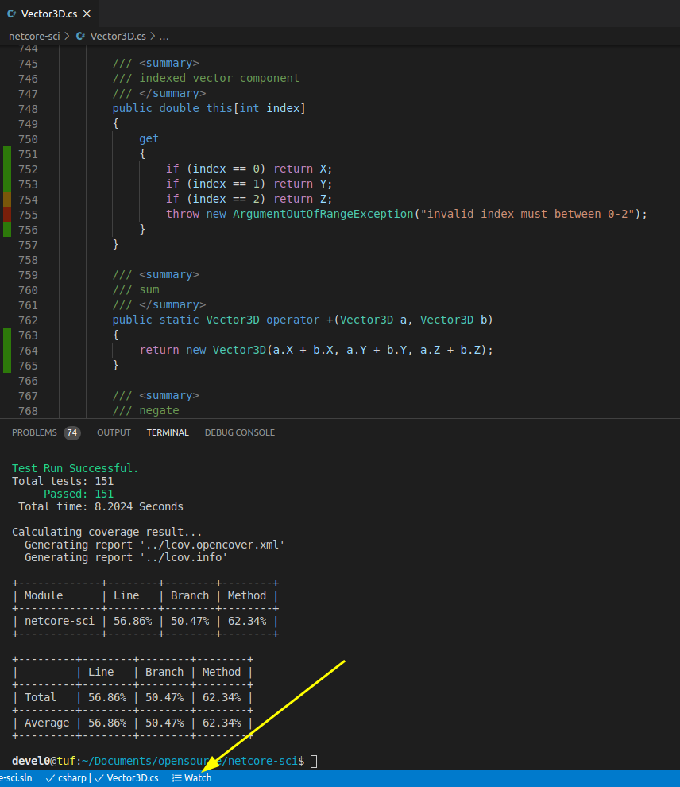
How this project was built
mkdir netcore-sci
cd netcore-sci
mkdir src examples
cd src
dotnet new classlib -n netcore-sci
mv netcore-sci sci
cd ..
cd examples
dotnet new console --use-program-main -n example
mv example/example.csproj example/example-0001.csproj
mv example example-0001
dotnet new xunit -n test
cd test
dotnet add reference ../sci/netcore-sci.csproj
# enable test coverage collector
# to view in vscode ( "Coverage Gutters" ext ) run `./test-coverage` then `C-S-p` Coverage Gutters: Watch
dotnet add package coverlet.collector
dotnet add package coverlet.msbuild
cd ..
cd ..
dotnet new sln
dotnet sln add src/sci src/test
dotnet sln add examples/example-0001 examples/example-0002 examples/example-0003
dotnet build
Documentation (github pages)
Configured through Settings/Pages on Branch docs ( path /docs ).
- while main branch exclude "docs" with .gitignore the docs branch doesn't
Build and view locally
./doc serve
Build and commit into docs branch
./doc commit
IOT
iot-sci is a c++ port of this library.